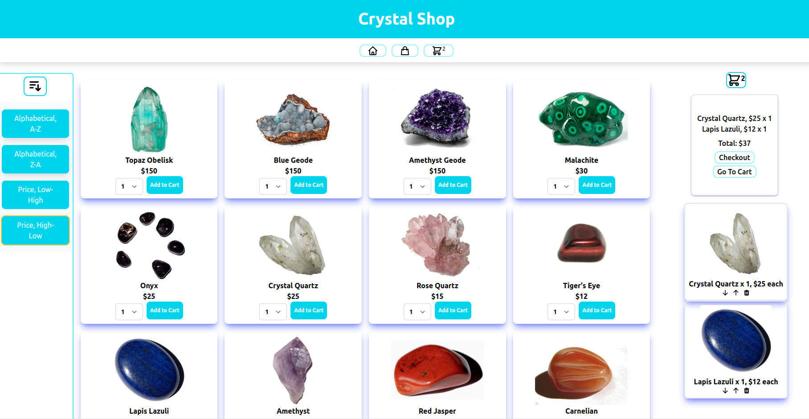
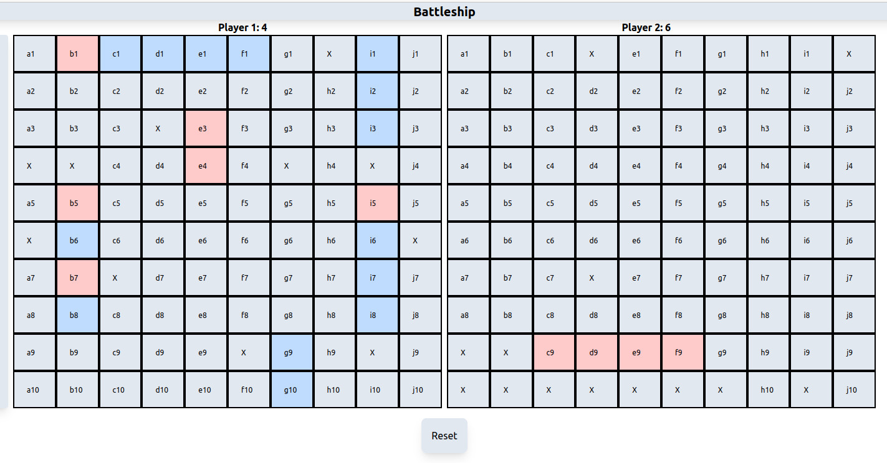
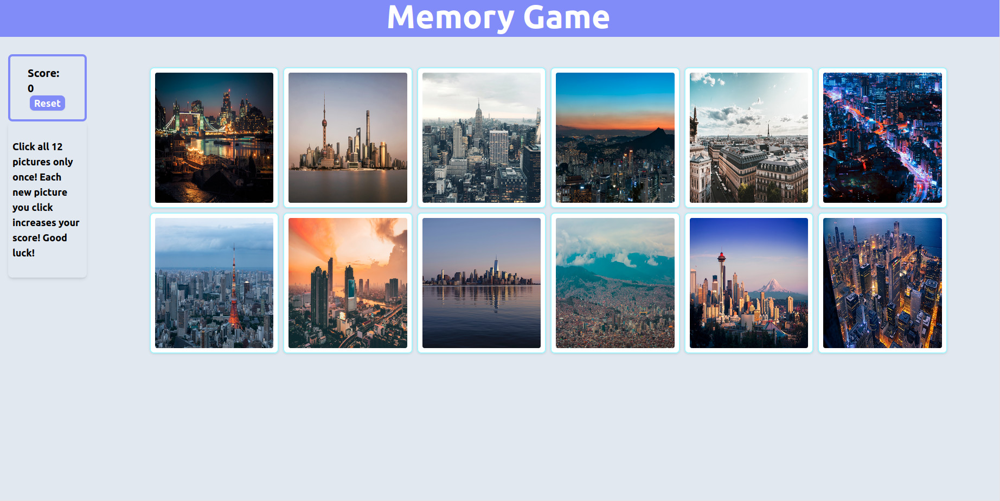
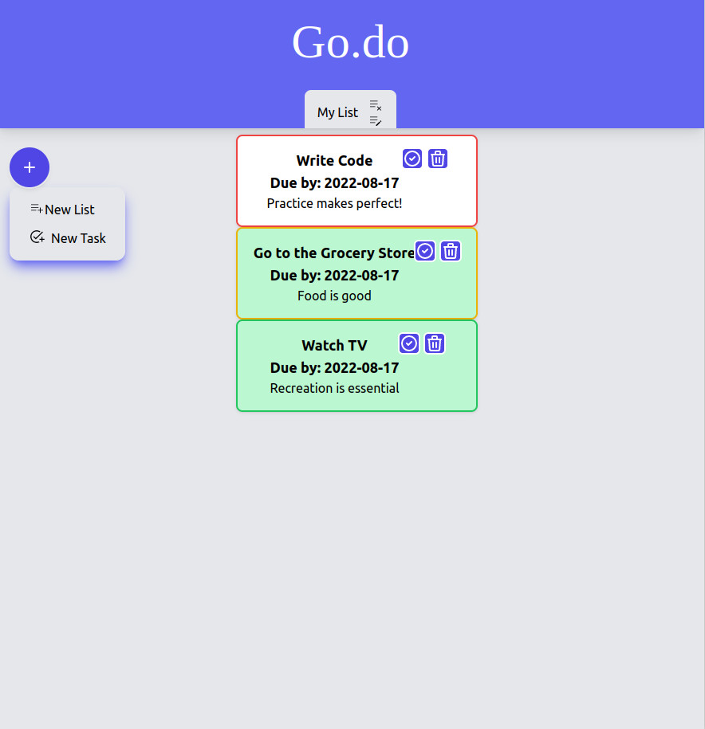
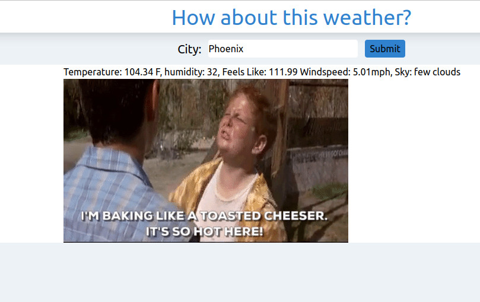

Hi, I'm Anthony!
I'm an explorer at heart with a love for tech, travel, and intellectual growth. In my career so far I have had the opportunity to learn so much about people, service, adaptability, and kindness -- all while getting to travel the world and work with new colleagues from all walks of life. I loved my time in the sky (and everywhere else, too!), but now I'm ready to work in a different kind of cloud! My skills in web development are primarily self-taught, though I do have some past experience in IT and active IT certifications, as well as a B.A. in English for all your documentation needs. Most of all, I love code and the joy of learning and building. Have a look at some of my projects and progress below!

Fully functional mobile-first storefront with working shopping cart, product sorting, and page routing. Built with React using hooks. Click the link icon to see it live! I just think crystals are neat.

Battleship game with drag and drop ship placement and click to attack functionality. Written in vanilla JavaScript using Test Driven Development (TDD). Click the link icon to play!

A memory game that challenges you to click each picture only once. Built with React using hooks.

A simple to-do list app built from HTML, vanilla JS, and CSS (Tailwind). Functional at different breakpoints with multiple list tracking.

A simple app that gets weather based on a provided location and displays a funny gif based on the result. Uses fetch/async/promises and REST APIs and processes JSON data.